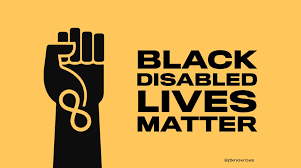

In our own words, Disability Justice is the framework that helps set the guidelines to oppose the civil issues and systems of oppression that hurt disabled communities. Sins Invalid, who are the major contributors to establishing the Disability Justice frameworks, have created the 10 principles of Disability Justice as the guidelines. To view and learn about their 10 principles of Disability Justice, you can click here.
The disability justice framework holds that ableism is linked to many other repressive regimes. The needs and voices of "people with disabilities of color, immigrants with disabilities, queers with disabilities, transgender and gender nonconforming people with disabilities, people with disabilities who are homeless, people with disabilities who are incarcerated, and people with disabilities whose ancestral lands have been stolen, among others," are emphasized in this. The activists and artists of Sins Invalid devised the "10 Principles of Disability Justice" to serve as a road map for activists as they work to build a broad-based popular movement where ableism may be destroyed alongside other oppressive institutions. Disability justice is a collectively-developed objective that draws inspiration from earlier instances of spiritual and cultural resistance. We begin modestly, putting up with daily insurrection fires while navigating a thousand underground passageways. In our fight for justice and a better way of life, black and brown people, who make up the majority of disabled people worldwide, confront and oppose colonial powers. As we instinctively know, there has always been resistance to oppression of all kinds, and disabled people have always envisioned a society in which we thrive and are respected and honored for who we are.
The Rehabilitation Act's Section 504 was the first federal statute to protect the civil rights of people with disabilities, and it was passed in 1973. Section 504 of the Rehabilitation Act states that no otherwise qualified disabled person in the United States shall be denied participation in, denied benefits under, or subjected to discrimination under any program or activity receiving federal financial assistance. In essence, it prohibited discrimination against people with disabilities in any program receiving government financing. On April 5, 1977, sit-in actions were held all throughout the United States as part of the Section 504 Sit-In disability rights protest. The greatest and longest demonstration, lasting a total of 26 days, was the takeover of the HEW headquarters in San Francisco. With 120 disability activists and protesters occupying the HEW building in San Francisco, this demonstration remains the longest sit-in at a government building in the United States. Many other activist movements formed a partnership to support this rally for disability rights. The Black Panther Party, among other activists and activist movements, supported the 504 Sit-In protesters in their dedication to public demonstration, and they were able to exert pressure on Democrats to uphold Section 504 thanks to their efforts.
Black people with disabilities are still disproportionately ignored in a nation that views them as second-class citizens, and we still have a long way to go before black people with disabilities are protected. The Americans with Disabilities Act turns 31 years old this month. In defending the rights of those with impairments, the ADA was revolutionary, but not for Black people. Black individuals are more likely than white people to struggle to acquire mental health care, have more chronic health disorders, and have less formal diagnoses for a variety of disabilities. Because of this and the other injustices that exist in every American system, white supremacy frequently attacks Black persons who have disabilities.
The ADA is a federal civil rights law that was passed in the year 1990 that prohibits discrimination against people who have any type of disability.
Deaf President Now was a student protest at Gallaudet University that began on March 6, 1998. The deaf students were appalled by boards decision to appoint a hearing candidate instead of a deaf candidate for the university of the deaf.